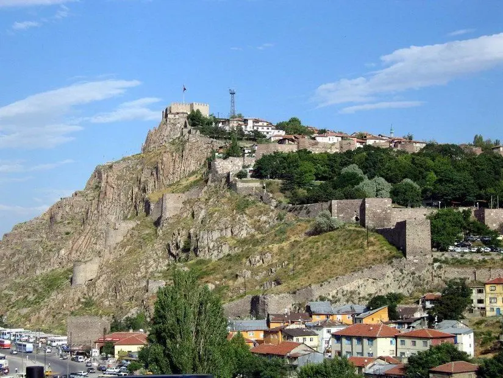

Gazi Mustafa Kemal Atatürk'ün ebedi istirahat yeri olarak her yıl milyonlarca kişi tarafından ziyaret edilen Anıtkabir, Ankara’nın merkezi ilçelerinden Çankaya’da yer alıyor. Anıtkabir gezinizde 1960 yılında hizmete açılan ve etkileyici koleksiyonlarıyla dikkat çeken Atatürk ve Kurtuluş Savaşı Müzesi’ni de mutlaka ziyaret etmenizi öneririz. Kompleks içerisinde İstiklâl Kulesi, Hürriyet Kulesi, Mehmetçik Kulesi, Müdafaa-i Hukuk Kulesi, Zafer Kulesi, Barış Kulesi, 23 Nisan Kulesi, Misak-ı Millî Kulesi, İnkılâp Kulesi, Aslanlı Yol, Tören Meydanı, İsmet İnönü'nün Lahdi ve Barış Parkı gibi pek çok etkileyici bölümü gezme şansı bulacaksınız.
Konum Linki 2- Ankara Kalesi
Ankara'nın Altındağ ilçesinde yer alan ve şehrin en önemli tarihi simgelerinden biri olan Ankara Kalesi’nin M.Ö. 2. yüzyılda Galatlar tarafından yapıldığı tahmin ediliyor.
Bölgeye hakim yüksek bir tepe üzerinde etkileyici bir manzara sunan Ankara Kalesi, uzun tarihi boyunca Romalılar, Bizanslılar, Selçuklular ve Osmanlılar tarafından kullanılarak değişikliklere uğramış.
Her yıl çeşitli festivaller ve etkinliklerin düzenlendiği Ankara Kalesi’nde 110 metre yükseklikteki 5 köşeli 42 kuleyi gezebilir, iç kale odalarını inceleyebilir ve surlardan muhteşem panoramik fotoğraflar çekebilirsiniz.
Konum Linki